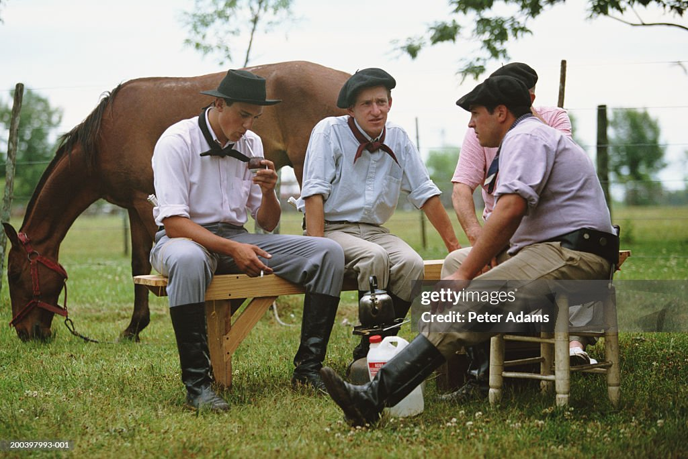

Que es la yerba mate?
El mate es una infusión a base de hojas de yerba mate, planta originaria de las cuencas de los ríos Paraguay y Paraná, en Sudamérica. La yerba mate está formada por hojas que son secadas, cortadas y molidas, que tienen sabor amargo debido a los taninos que contienen.

Que es la cultura del mate?
El mate nace con las costumbres de los indígenas guaraníes que habitaban la zona que hoy conforma Paraguay y partes de Argentina, Uruguay y Brasil. Los guaraníes utilizaban las hojas del árbol de la yerba mate como bebida y también como moneda de intercambio con otros pueblos.